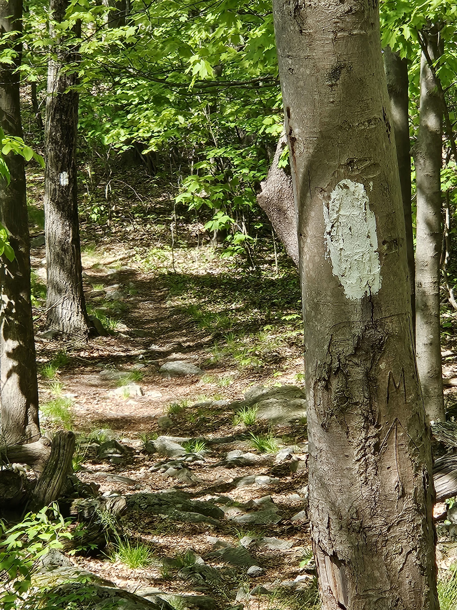

Data & Analytics Strategy
Define the right data model, reporting roadmap, KPIs, and governance approach so teams can trust the numbers and act faster.
IT Consulting Company
White Blaze Analytics LLC helps organizations move from technology uncertainty to clear, practical next steps across data, analytics, cloud, automation, and modern IT delivery.
Why White Blaze
Our name comes from the white blazes that guide hikers along the Appalachian Trail from Georgia to Maine. Those marks do not walk the trail for you. They show you where you are, keep you pointed in the right direction, and help you keep moving.
That is how we approach consulting: practical guidance, grounded execution, and technology recommendations that fit the terrain in front of you.

What we do
Whether you are modernizing systems, building better reporting, untangling data flows, or planning your next platform decision, White Blaze Analytics brings structure to the journey.
Define the right data model, reporting roadmap, KPIs, and governance approach so teams can trust the numbers and act faster.
Assess architecture, integrations, storage, pipelines, and tooling choices with a focus on practical implementation and long-term maintainability.
Identify manual work, fragile handoffs, and repeatable workflows that can be simplified with better systems, scripts, dashboards, and controls.
Help plan, design, and improve internal tools, client-facing sites, portals, and lightweight applications that support real business needs.
Turn scattered priorities into a sequenced plan that balances business value, technical debt, budget, staffing, and risk.
Provide experienced guidance for teams that need senior technology perspective without adding a full-time executive role.
Our approach
We keep the process focused on decisions and outcomes, not jargon.
We start by understanding your current systems, pain points, goals, and constraints.
We translate the work into a clear roadmap with practical phases, dependencies, and tradeoffs.
We help execute, advise, document, and adjust as the terrain changes.
Start here
Tell us where you are trying to go. We will help you identify the next marker, the next milestone, and the right path forward.